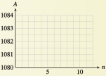

Subsection 3.8 Investigation
Investigation 3.8.1. Interest Compounded Continuously.
We learned in Section 5 that the amount, \(A\) (principal plus interest), accumulated in an account with interest compounded \(n\) times annually is
where \(P\) is the principal invested, \(r\) is the interest rate, and \(t\) is the time period, in years.
-
Suppose you keep \(\$1000\) in an account that pays \(8\%\) interest. How much is the amount \(A\) after \(1\) year if the interest is compounded twice a year? Four times a year?
\begin{gather*} n = \alert{2}: A = 1000\left(1 + \frac{0.08}{\alert{2}} \right)^{\alert{2}(1)}= \\ n = \alert{4}: A = 1000\left(1 + \frac{0.08}{\alert{4}} \right)^{\alert{4}(1)}= \end{gather*} -
What happens to \(A\) as we increase \(n\text{,}\) the number of compounding periods per year? Fill in the table showing the amount in the account for different values of \(n\text{.}\)
\(n\) \(A\) \(1\) (annually) \(1080\) \(2\) (semiannually) \(\) \(4\) (quarterly) \(\) \(6\) (bimonthly) \(\) \(12\) (monthly) \(\) \(365\) (daily) \(\) \(1000\) \(\) \(10,000\) \(\)  Plot the values in the table from \(n = 1\) to \(n = 12\text{,}\) and connect them with a smooth curve. Describe the curve: What is happening to the value of \(A\text{?}\)
-
In part (2), as you increased the value of \(n\text{,}\) the other parameters in the formula stayed the same. In other words, \(A\) is a function of \(n\text{,}\) given by \(A = 1000 (1 + \dfrac{0.08}{n} )^n\text{.}\) Use your calculator to graph A on successively larger domains:
\(\text{Xmin} = 0, \text{Xmax} = 12; \text{Ymin} = 1080, \text{Ymax} = 1084\)
\(\text{Xmin} = 0, \text{Xmax} = 50; \text{Ymin} = 1080, \text{Ymax} = 1084\)
\(\text{Xmin} = 0, \text{Xmax} = 365; \text{Ymin} = 1080, \text{Ymax} = 1084\)
Use the Trace feature or the Table feature to evaluate \(A\) for very large values of \(n\text{.}\) Rounded to the nearest penny, what is the largest value of \(A\) that you can find?
As \(n\) increases, the values of \(A\) approach a limiting value. Although \(A\) continues to increase, it does so by smaller and smaller increments and will never exceed \(\$1083.29\text{.}\) When the number of compounding periods increases without bound, we call the limiting result continuous compounding.
Is there an easier way to compute \(A\) under continues compounding? Yes! Compute \(1000e^{0.08}\) on your calculator. (Press
2ndLNto enter \(e^x\text{.}\)) Compare the value to your answer in part (5) for the limiting value. The number \(e\) is called the natural base. We'll compute its value shortly.-
Repeat your calculations for two other interest rates, \(15\%\) and (an extremely unrealistic) \(100\%\text{,}\) again for an investment of \(\$1000\) for \(1\) year. In each case, compare the limiting value of \(A\text{,}\) and compare to the value of \(1000e^r\text{.}\)
\(r=0.15\) \(n\) \(A\) \(1\) \(115\) \(2\) \(\hphantom{00000}\) \(4\) \(\) \(6\) \(\) \(12\) \(\) \(3652\) \(\) \(1000\) \(\) \(10,000\) \(\) \(~~1000e^{0.15}= \) \(r=1\) \(n\) \(A\) \(1\) \(200\) \(2\) \(\hphantom{00000}\) \(4\) \(\) \(6\) \(\) \(12\) \(\) \(3652\) \(\) \(1000\) \(\) \(10,000\) \(\) \(~~1000e^{1}= \)
In part (8b), you have computed an approximation for \(1000e\text{.}\) What is the value of \(e\text{,}\) rounded to \(5\) decimal places?
-
Complete the table of values. What does \(\left(1 + \dfrac{1}{n} \right)^n\) appear to approach as \(n\) increases?
\(n\) \(100\) \(1000\) \(10,000\) \(100,000\) \(\left(1+\frac{1}{n} \right)^n \)